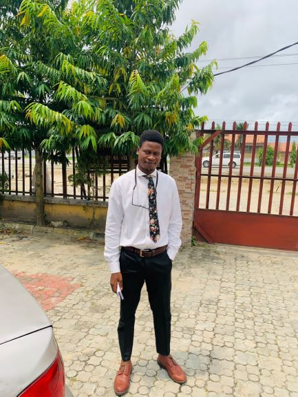
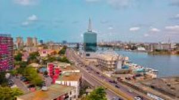

Erubami Freedom
About Me

My name is Erubami Freedom from Delta State, Nigeria, and I currently live in Lagos. I work as a freelance architectural designer and aspire to become a software developer. This motivation led me to enroll in BYU–Pathway Worldwide. I enjoy soccer, and my favorite football team is Real Madrid.
Lagos City, Nigeria

Lagos is a major metropolitan city in southwestern Nigeria with an estimated population of over 20 million people. It is the economic and financial hub of the country and one of the fastest-growing megacities in the world.